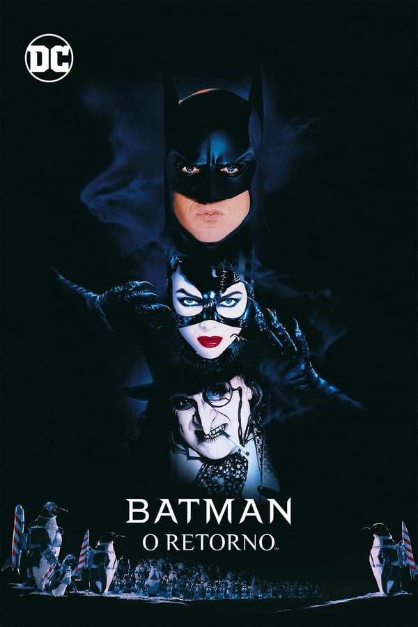
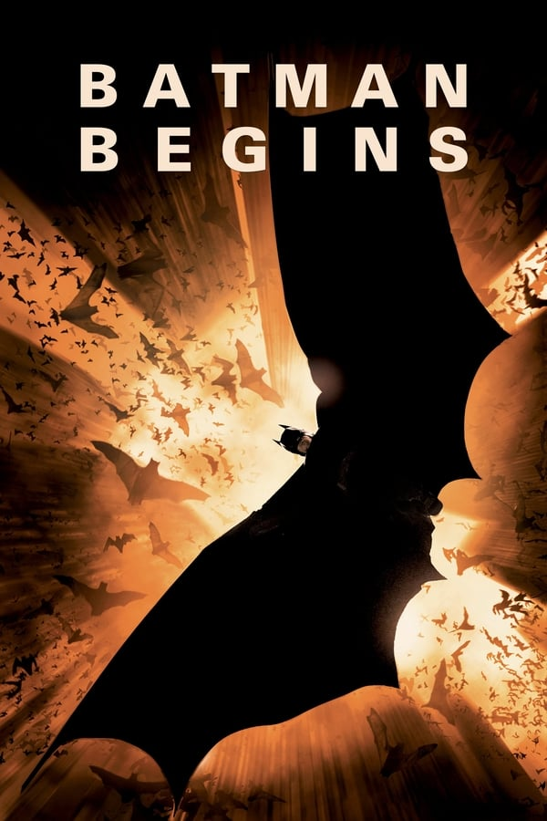
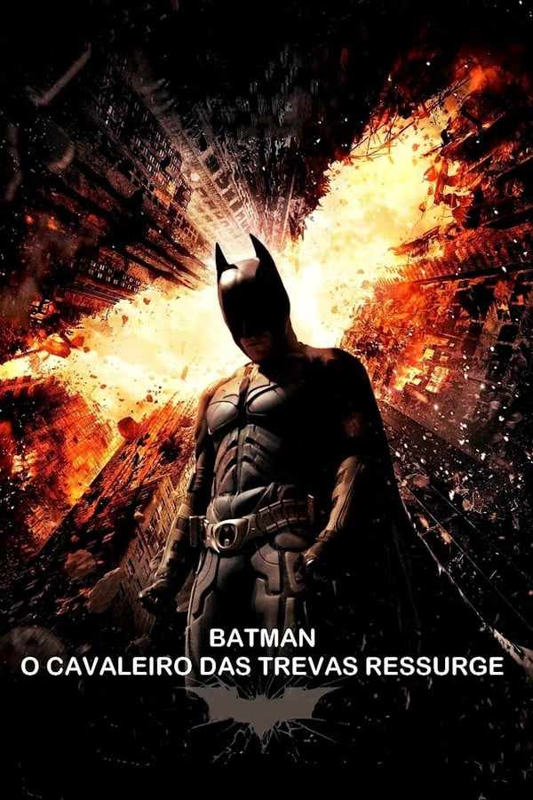

Em Gotham City, Charada, Pinguim, Coringa e Mulher-Gato roubam uma invenção secreta e planejam usá-la de forma maléfica.
Além disto, planejam também destruir o Homem-Morcego e o Menino-Prodígio.

Em Gotham City o milionário Bruce Wayne, que quando jovem teve os pais assassinados por bandidos,
resolve combater o crime como Batman, o Homem-Morcego.

Com o objetivo de manipular Gotham City, um milionário tenta transformar o Pinguim, um ser deformado que tinha sido abandonado ainda bebê nos esgotos,
em prefeito da cidade. Como se isto não bastasse, surge a Mulher-Gato.
Duas-Caras e Charada, dois excêntricos bandidos, decidem descobrir a identidade do Homem-Morcego para depois matá-lo.

A dupla dinâmica enfrenta uma terrível dupla de vilões: o gélido Mr. Freeze e a vingativa Hera Venenosa.

Marcado pelo assassinato de seus pais quando ainda era criança, o milionário Bruce Wayne decide viajar pelo mundo em busca de
encontrar meios que lhe permitam combater a injustiça e provocar medo em seus adversários.

Com o surgimento do Batman, os criminosos de Gotham City têm muito o que temer.
Com a ajuda do tenente James Gordon e do promotor público Harvey Dent, Batman luta contra o crime organizado.

Após ser culpado pela morte de Harvey Dent e passar de herói a vilão, Batman desaparece. As coisas mudam com a chegada de uma ladra misteriosa,
a Mulher-Gato, e Bane, um terrorista mascarado, que fazem Batman abandonar seu exílio forçado.
Temendo que as ações de um super-herói divino não tenham sido controladas,
o formidável e vigoroso vigilante de Gotham City enfrenta o salvador mais reverenciado e moderno de Metrópolis.